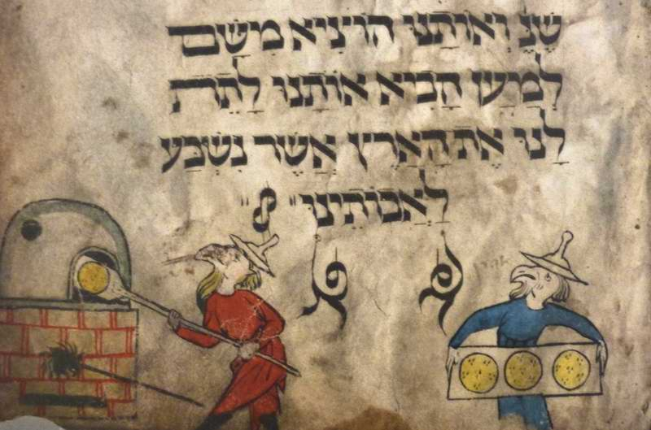
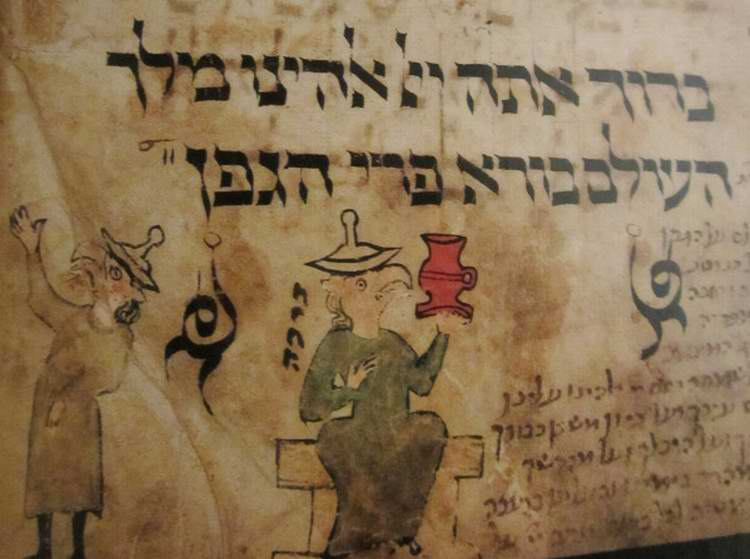

Песах. ИЗ ЧЕГО отцы наши в ПУСТЫНЕ МАЦУ ПЕКЛИ?
Одно исключительное, празднование Песаха, на которое указывает Тора, произошло уже после исхода из Египта состоялось в пустыне Синайской по исходе Израиля из Египта. И отцы наши исполнили заповедь - вкушения исключительно пресного хлеба. Сам праздник назван именем этой заповеди - ПРАЗДНИК МАЦОТ (ивр. - праздник Опресноков). Вообще на протяжении сорокалетнего странствования по пустыне, как можно понять из Торы, израильтяне не обрезывали младенцев мужского пола, не праздновали праздников, не приносили жертв, и не исполняли в полном объеме заповеди Торы.
Песах. ИЗ ЧЕГО отцы наши в ПУСТЫНЕ МАЦУ ПЕКЛИ? Вопрос отнюдь не праздный.

- Эйдль: что вы скажете, правильно я понимаю, мацу в пустыне делали из манна?
- Менахем: я не уверен что ее вообще делали в пустыне. Это же заповедь, которая вступала в силу в Стране.
- Эйдль: ты хочешь сказать, что в пустыне праздники не праздновали
- Менахем: Если не обрезывались, то ведь и не могли праздновать. До И.Нав 5:10 Песах не упоминается. После египетского.
- Эйдль: на счет обрезания это ты верно заметил, нда-а-а
- Менахем: А еще Песах отмечали во второй год по выходу. Это известно.
Бемидбар 9 (Чис.9:1-5). А дальше нет следов.

- Эйдль: тогда обязаны были есть мацу, нет?
- Менахем: Да. НО у них еще были запасы пшеницы.
- Эйдль: это известно? На такую араву хлеба?
- Менахем: На мацу не много надо...
- Эйдль: т.е. ты хочешь сказать, что они приберегли специально для Песаха?
- Менахем: мацу можно печь из злаков. А ман, я не уверен что это злак.
- Эйдль: но он, в любом случае выполнял роль хлеба?!
- Менахем: Да. Но мацу из него сделать я не уверен можно ли.
- Эйдль: о нем ведь сказано, что его приготавливали по-разному, в том числе выпекали?
- Менахем: Да. Но маца должна быть из злаков. Если бы она квасилась, можно из нее было бы делать опресноки. То есть если да, так она злак.

- Эйдль: да, но ведь это хлеб с неба!!! Т.е. он кошерный и совершенно бесквасный по поределению! Он же ведь символ Мессии!
- Менахем: Тогда они все время ели мацу. В чем особенность Песаха? Там в Бемидбар (Чис.9:1-5) сказано повеление есть опрестноки. Зачем его давать если другого нет?
- Эйдль: ну да, это было особое блаженное состояние пустыни. Бог ведь призвал отцов наших праздновать в пустыню. Опресноки, если предположить, что манн бесквасен, вполне могли быть и манновыми, а в Эрец Исраэль - уже земной хлеб.
- Менахем: Я не уверен. Ведь хлеб штука злаковая. То есть из капусты нельзя сделать хлеб.
Можно конечно нарисовать тот мидраш который рисуешь ты. Но ...

- Эйдль: Иешуа - хлеб, сошедший с небес. Был совершенно бесквасен! Йешуа бесквасен. Как символ - манн должен бы быть, представляя небесное , бесквасен!
- Менахем: Отцы ели тот хлеб и умерли.
- Эйдль: ну да, «не помогло им слово не растворенное верой».
- Менахем: а ман - не уверен... В общем. твой мидраш имеет право на существование.
автор: Эфраим Калиш /TORAART/